КОНТРОЛЬНАЯ РАБОТА № 1
ВАРИАНТ 1
1. Расположите события в хронологическом порядке.
A) продажа Аляски Соединённым Штатам Америки
Б) начало реформы управления государственными крестьянами П.Д. Киселёва
B) издание «Положения о мерах к охранению государственного порядка и общественного спокойствия»
Г) Бородинская битва
Запишите получившуюся последовательность букв.
2. Установите соответствие между событиями и годами.
СОБЫТИЯ
A) открытие I Государственной думы
Б) издание указа о вольных хлебопашцах
B) создание «Союза борьбы за освобождение рабочего класса»
Запишите цифры, соответствующие выбранным ответам.
ГОДЫ
1) 1803 г.
2) 1842 г.
3) 1895 г.
4) 1906 г.
3. Прочитайте отрывок из воспоминаний современника и выберите два верных суждения.
Это известие всех страшно поразило, огорчило, ошеломило. Подробности о совершённом злодеянии исполнили всех ужасом. Во всех слоях народа грусть, страх и изумление овладели людьми. Где и чего тогда не говорили! По сёлам стали распространять слухи о том, что дворяне убили царя за лишение их крепостных людей. В городах пугали смутами по деревням. Даже в войсках не было совершенно спокойно... Целые два месяца Россия была в каком-то странном смущении и оцепенении; не только руки отпадали от всякого дела, но даже ум и чувства как будто омертвели. Покойного государя любили, обожали освобождённые крестьяне и бывшие дворовые люди; но душевно были к нему расположены и преданы в обществе все лично его знавшие и те, которые много слышали о его сердечной доброте, о его всегдашнем расположении ко всякому доброму делу. Едва ли кто из русских самодержцев был вообще так любим, как ____. Всякий русский с чувством от души говорил:
«Вечная тебе память!»
1) В отрывке пропущено имя Александра III.
2) Автор пишет, что многие крестьяне плохо относились к покойному императору.
3) События, о которых идёт речь в отрывке, произошли в 1880-х гг.
4) Современником описываемых событий был А.Х. Бенкендорф.
5) По мнению автора, крестьяне считали дворян виновниками смерти императора.
4. Установите соответствие между событиями (процессами, явлениями) и участниками этих событий (процессов, явлений).
СОБЫТИЯ (ПРОЦЕССЫ, ЯВЛЕНИЯ)
A) Русско-японская война
Б) Отечественная война 1812 г.
B) оборона Севастополя
УЧАСТНИКИ
1) В.И. Истомин
2) М.Д. Скобелев
3) С.О. Макаров
4) П.И. Багратион
Запишите цифры, соответствующие выбранным ответам.
5. Какие события относятся к периоду царствования Николая I? Укажите два события.
1) Синопское сражение
2) создание организации «Народная воля»
3) учреждение первых министерств
4) отмена конституции Царства Польского
5) создание РСДРП
6. Ниже приведён перечень терминов (названий). Все они, за исключением одного, относятся к событиям (явлениям, процессам), происходившим в России в период правления Александра I. Найдите и укажите порядковый номер термина (названия), выпадающего из данного ряда.
1) барщина
2) военные поселения
3) отрезки
4) рекрут
5) отходничество
7. Установите соответствие между событиями (явлениями, процессами) и фактами, относящимися к этим процессам (явлениям, событиям).
СОБЫТИЯ (ПРОЦЕССЫ, ЯВЛЕНИЯ)
A) реформаторская деятельность Николая I
Б) реформы начала царствования Александра I
B) реформаторская деятельность Николая II
ФАКТЫ
1) учреждение Совета министров
2) создание Верховной распорядительной комиссии по охране государственного порядка и общественного спокойствия
3) издание указа об обязанных крестьянах
4) учреждение Государственного совета Российской империи
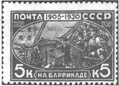
8. Укажите два верных суждения о данной почтовой марке.
1) В год, когда произошли изображённые на марке события, началась Русско-японская война.
2) Картина, изображённая на марке, посвящена событиям, произошедшим в Санкт-Петербурге.
3) Современником событий, которым посвящена марка, был А.И. Желябов.
4) Изображённые события произошли в декабре указанного на марке года.
5) В один из годов, указанных на марке, был издан Манифест об усовершенствовании государственного порядка.
9. Кто из писателей, портреты которых представлены ниже, был современником события, которому посвящена марка?
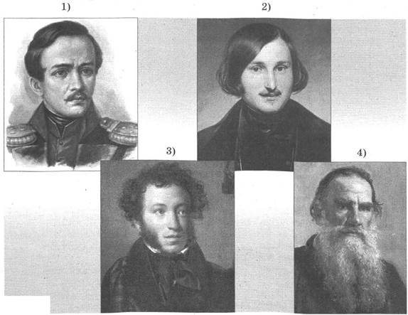
10. На основе данных статистической таблицы завершите представленные ниже суждения, соотнеся их начала и варианты завершения.
Естественный прирост населения России в 1900 г. и 1913 г., тыс. чел.
|
Годы |
Европейская Россия |
Привисленские губернии |
Кавказ |
Сибирь |
Средняя Азия |
Всего |
|
1900 |
1803,5 |
188,6 |
164 |
101,5 |
112,6 |
2375,2 |
|
1913 |
1987,5 |
208,1 |
218,6 |
184,8 |
155,5 |
2754,5 |
НАЧАЛО СУЖДЕНИЯ
A) Количественный естественный прирост населения в 1913 г. был выше, чем в 1900 г.
Б) Наибольшее увеличение количественного естественного прироста населения в 1913 г. по сравнению с 1900 г. было зафиксировано
B) Наименьшее увеличение количественного естественного прироста населения в 1913 г. по сравнению с 1900 г. было зафиксировано
ВАРИАНТЫ ЗАВЕРШЕНИЯ СУЖДЕНИЯ
1) в Привисленских губерниях.
2) во всех регионах России, представленных в таблице.
3) в Сибири.
4) не во всех регионах России, представленных в таблице.
5) в Европейской России.
Запишите цифры, соответствующие выбранным ответам.
11. Сравните революционное движение в периоды правления Александра I и Александра II. Выберите и запишите в первую колонку таблицы порядковые номера черт сходства, а во вторую — порядковые номера черт различия.
1) участие в революционном движении в основном дворян
2) использование насильственных методов для достижения цели
3) создание революционных организаций
4) выдвижение идеи привлечения народных масс к участию в революции
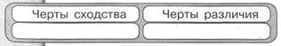
12. Установите соответствие между памятниками культуры и их авторами.
ПАМЯТНИКИ КУЛЬТУРЫ
A) картина «Последний день Помпеи»
Б) опера «Жизнь за царя»
B) здание Ярославского вокзала в Москве
АВТОРЫ
1) Ф.О. Шехтель
2) М.И. Глинка
3) В.О. Ключевский
4) К.П. Брюллов
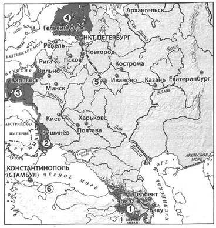
13. Выберите три суждения, которые относятся к исторической ситуации, обозначенной на карте.
1) Территории, обозначенные на карте цифрами 3 и 4, были присоединены к России в правление одного и того же императора.
2) Обозначенные на карте железные дороги были построены в период правления Александра II.
3) Территория, обозначенная на карте цифрой 2, была присоединена к России в результате войны с Турцией.
4) В период, к которому относится данная историческая ситуация, столицей Российской империи был город, обозначенный на карте цифрой 5.
5) Столицей государства, обозначенного на карте цифрой 6, была Вена.
6) В период, к которому относится данная историческая ситуация, Варшава была российским городом.
14. Запишите название государства, в результате войны с которым к России была присоединена территория, обозначенная на карте цифрой 4.
Ответ:
15. Запишите имя российского монарха, в правление которого к России была присоединена территория, обозначенная на карте цифрой 1.
Ответ:
16. Запишите термин, о котором идёт речь.
Крупная политическая партия либерального направления в Российской империи, образованная в 1905 г. Виднейшим лидером этой партии был П.Н. Милюков.
Ответ:
17. Прочитайте отрывок из международного договора и укажите название города, где был подписан этот договор.
...Болгария образует из себя княжество самоуправляющееся и платящее дань, под главенством его и. в. султана; она будет иметь христианское правительство и народную милицию...
...На юг от Балкан образуется провинция, которая получит наименование «Восточная Румелия» и которая останется под непосредственною политическою и военною властью е. и. в. султана на условиях административной автономии. Она будет иметь генерал-губернатором христианина.
...Провинции Босния и Герцеговина будут заняты и управляемы Австро-Венгрией.
Ответ:
18. Заполните пропуск в схеме.
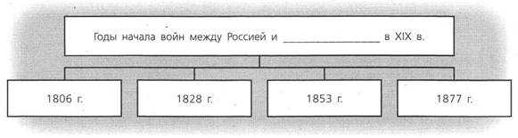
Ответ:
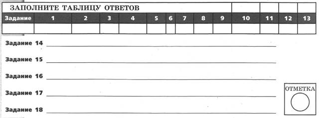
ВАРИАНТ 2
1. Расположите события в хронологическом порядке.
A) заключение Адрианопольского мира с Османской империей
Б) введение всесословной воинской повинности
B) Кровавое воскресенье
Г) учреждение Государственного совета Российской империи Запишите получившуюся последовательность букв.
2. Установите соответствие между событиями и годами.
СОБЫТИЯ
A) начало обороны Севастополя
Б) создание Верховной распорядительной комиссии по охране государственного порядка и общественного спокойствия
B) создание Союза спасения
ГОДЫ
1) 1816 г.
2) 1854 г.
3) 1880 г.
4) 1905 г.
Запишите цифры, соответствующие выбранным ответам.
3. Прочитайте отрывок из дневниковых записей и выберите два верных суждения.
...Сегодня великий князь сообщил цифры потерь. Убитых и раненых у нас до 300 офицеров и 12500 нижних чинов; у румын до 60 офицеров и до 3000 нижних чинов... Плевна уже стоит нам 25 тысяч человек...
...Весть о падении Плевны вчера же вечером разлилась по городу. Во всех театрах и на улицах демонстрации радости и энтузиазма.
...Я ли болен или другие больны? Вокруг меня все как будто торжествуют и успокоены. Не менее их радуюсь тому, что Плевна пала. Но что же далее? Разве это конец? Разве не мы сами помогли создать Плевну, прежде чем её взять? Государь возвращается. Только и речи о восторженной встрече. Разве это в своём роде не признак года, более или менее похвального, но всё-таки года? Разве отсутствовавший 6 месяцев самодержец возвращается триумфатором? Нужны дальнейшие усилия, нужно сознание всех трудностей незавершённого дела; торжеству будет досуг впоследствии. Между тем не видно, что сделано после падения Плевны с бывшею перед нею армией. Время уходит. Прошло 6 дней. Немцы на другой день после Седана уже поворотили на Париж...
1) Современником описываемых событий был М.М. Сперанский.
2) Император, о котором идёт речь, — Александр II.
3) Автор описывает всеобщую радость по поводу событий войны.
4) Автор считает, что описываемые им события войны с Турцией — это уже победа в войне.
5) События, о которых идёт речь, произошли в 1856 г.
4. Установите соответствие между событиями (процессами, явлениями) и участниками этих событий (процессов, явлений).
СОБЫТИЯ (ПРОЦЕССЫ, ЯВЛЕНИЯ)
A) деятельность III отделения Собственной Его Императорского Величества канцелярии
Б) проведение аграрной реформы в начале XX в.
B) составление Государственной уставной грамоты Российской империи
УЧАСТНИКИ
1) П.А. Столыпин
2) Н.Н. Новосильцев
3) М.А. Бакунин
4) А.Х. Бенкендорф
Запишите цифры, соответствующие выбранным ответам.
5. Какие из перечисленных событий произошли в начале XX в.? Укажите два события.
1) Кровавое воскресенье
2) создание Священного союза
3) заключение Туркманчайского мирного договора
4) создание группы «Освобождение труда»
5) роспуск II Государственной думы
6. Ниже приведён перечень терминов (названий). Все они, за исключением одного, относятся к событиям (явлениям, процессам), происходившим в России в период правления Александра III. Найдите и укажите порядковый номер термина (названия), выпадающего из данного ряда.
1) промышленный переворот
2) контрреформы
3) монополии
4) либеральное народничество
5) многопартийность
7. Установите соответствие между событиями (явлениями, процессами) и фактами, относящимися к этим событиям (явлениям, процессам).
СОБЫТИЯ (ПРОЦЕССЫ, ЯВЛЕНИЯ)
A) Крымская война
Б) участие России в антифранцузских коалициях
B) Русско-японская война
ФАКТЫ
1) Синопское сражение
2) сражение под Аустерлицем
3) оборона Шипки
4) Цусимское сражение
Запишите цифры, соответствующие выбранным ответам.
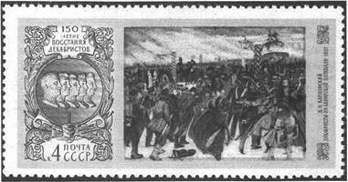
8. Укажите два верных суждения о данной почтовой марке.
1) На представленной на марке картине изображён скульптурный памятник, построенный в период правления Екатерины II.
2) В левой части марки изображены профили российских военачальников, погибших во время Отечественной войны 1812 г.
3) Во время события, изображённого на марке, погиб И.Ф. Паскевич.
4) События, изображённые на марке, произошли в Москве.
5) Данная марка выпущена в 1970-х гг.
9. Какое из зданий, представленных ниже, было построено в период правления императора, вступление на престол которого связано с событием, изображённым на марке?
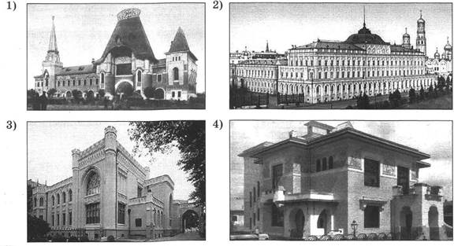
10. На основе данных статистической таблицы, завершите представленные ниже суждения, соотнеся их начала и варианты завершения.
Население России в 1796 г. и в 1858 г.
|
Годы |
Всего, млн чел. |
В том числе городское население |
В том числе |
крепостные |
|
|
млн чел. |
в % ко всему населению |
млн чел. |
в % ко всему населению |
||
|
1796 |
36,0 |
1,3 |
3,6 |
20,0 |
55,5 |
|
1858 |
74,0 |
4,2 |
5,7 |
22,7 |
30,7 |
НАЧАЛО СУЖДЕНИЯ
A) Численность городского населения в период 1796-1858 гг.
Б) Доля крепостных в структуре населения России в период 1796- 1858 гг.
B) Доля горожан в структуре населения России
ВАРИАНТЫ ЗАВЕРШЕНИЯ СУЖДЕНИЯ
1) была больше в 1796 г.
2) незначительно увеличилась.
3) была больше в 1858 г.
4) уменьшилась.
5) увеличилась более чем в 3 раза.
Запишите цифры, соответствующие выбранным ответам.
11. Сравните внешнюю политику Николая I и Александра II. Выберите и запишите в первую колонку таблицы порядковые номера черт сходства, а во вторую — порядковые номера черт различия.
1) ведение войн против Османской империи
2) продажа части территории России другому государству
3) ведение войн против Ирана
4) присоединение к России новых территорий
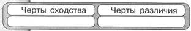
12. Установите соответствие между памятниками культуры и их авторами.
ПАМЯТНИКИ КУЛЬТУРЫ
A) памятник А.С. Пушкину в Москве
Б) повесть «Бедная Лиза»
B) картина «Бурлаки на Волге»
АВТОРЫ
1) П.И. Чайковский
2) А.М. Опекушин
3) Н.М. Карамзин
4) И.Е. Репин
Запишите цифры, соответствующие выбранным ответам.
Рассмотрите карту и выполните задания 13—15.
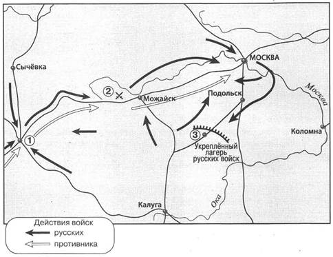
13. Выберите три суждения, которые относятся к исторической ситуации, обозначенной на карте.
1) В сражении, обозначенном на карте цифрой 2, был смертельно ранен П.И. Багратион.
2) События, обозначенные на карте стрелками, произошли зимой.
3) Цифрой 3 на схеме обозначено село Тарутино.
4) Цифрой 1 на схеме обозначен город Минск.
5) В сражении, обозначенном на карте цифрой 2, главнокомандующим русской армией был М.Б. Барклай де Толли.
6) В ходе событий, обозначенных на карте, в Москве произошёл сильный пожар.
14. Запишите год, когда произошли события, обозначенные на карте.
Ответ:
15. Запишите имя главнокомандующего армией противника в период, к которому относится данная карта.
Ответ:
16. Запишите термин, о котором идёт речь.
Литературное и религиозно-философское течение русской общественной мысли, оформившееся в 40-х гг. XIX в., ориентированное на выявление самобытности России, её типовых отличий от Запада.
Ответ:
17. Прочитайте отрывок из международного договора и запишите название, пропущенное в тексте.
В видах обеспечения для русских военно-морских сил вполне надёжной опоры на побережье Северного Китая е. в. император китайский соглашается предоставить российскому правительству в арендное пользование порты ____ и Дальний вместе с прилегающим к этим портам водным пространством. Арендой этой, однако, никоим образом не нарушаются верховные права е. в. императора китайского на вышеуказанную территорию.
...Срок аренды устанавливается в двадцать пять лет со дня подписания настоящего соглашения и может быть затем продолжен по обоюдному соглашению между обоими правительствами.
Ответ:
18. Заполните пропуск в схеме.
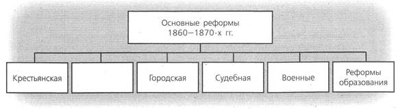
Ответ:
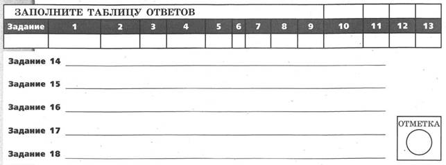
КОНТРОЛЬНАЯ РАБОТА № 2
ВАРИАНТ 1
1. Правление этого императора началось с крупного восстания военных в Санкт-Петербурге, которое было подавлено. После подавления восстания император поставил себе за правило следить за состоянием общества, знать, чем дышит каждая сословная группа и по возможности каждый человек. Назовите императора, о котором идёт речь. Укажите название участников восстания, под которым они вошли в историю. Укажите одну меру, которую принял император, чтобы иметь возможность следить за состоянием общества.
2. Существует точка зрения, что российское революционное движение в XIX в. не имело народной поддержки, достаточной для осуществления своих целей. Приведите два аргумента в подтверждение данной точки зрения.
3. Прочитайте отрывок из сочинения историка и выполните задания.
В отличие от дореволюционного периода, когда переселение носило преимущественно стихийный характер, правительство ____ поощряло этот процесс и в то же время стремилось упорядочить его, взять под свой контроль. По мнению ____, «разумно организованное переселение», с одной стороны, облегчало решение аграрного вопроса в тех губерниях — прежде всего чернозёмных, где крестьяне страдали от малоземелья; с другой — позволяло создать массу «крепких хозяйств» на востоке страны, инициировав хозяйственное освоение Сибири. При этом правительство стремилось обеспечить более или менее равномерное заселение этого огромного региона — там, где можно было заниматься сельским хозяйством.
Правительство оказывало переселенцам определённую поддержку. Так, они оплачивали свой проезд по железной дороге по льготному, так называемому переселенческому тарифу, который был значительно ниже общего (в среднем дорожные расходы одной семьи уменьшались благодаря этому на 80 рублей). Был создан особый тип пассажирского вагона, специально предназначенный для переселенцев и отличавшийся относительной комфортабельностью. Казённые земли в Сибири закреплялись за крестьянами даром. Тем, кто получал участки в тайге и других трудноосваиваемых местах, выделялась ссуда до 300 рублей.
Запишите фамилию главы правительства, дважды пропущенную в тексте. Укажите год, когда этот государственный деятель занял пост главы правительства.
Найдите во втором абзаце отрывка и запишите предложение, содержащее вывод, который обосновывается далее в тексте. Укажите не менее двух положений, приведённых для обоснования этого вывода.
Укажите ещё одну меру (не названную в данном отрывке), которая была принята указанным в отрывке правительством в рамках аграрной реформы. Укажите цель, которую хотело достичь правительство с помощью этой меры.
4. Сравните управление Российской империей в конце царствования Александра I и в 1913 г. Приведите две общие характеристики и два различия. Заполните таблицы.
Общее
|
Линии (критерии) сравнения |
Управление Российской империей в конце царствования Александра I и в 1913 г. |
Различия
|
Линии (критерии) сравнения |
Управление Российской империей в конце царствования Александра I |
Управление Российской империей в 1913 г. |
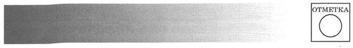
ВАРИАНТ 2
1. Летом 1877 г. молодая женщина пришла на приём к петербургскому градоначальнику Ф.Ф. Трепову и выстрелила в него. Свой поступок она оправдала тем, что ранее Ф.Ф. Трепов в нарушение закона приказал выпороть одного из политических заключённых. Суд присяжных оправдал женщину, покушавшуюся на градоначальника. Назовите фамилию женщины, о которой идёт речь. Назовите императора, в период правления которого произошли эти события. Какое влияние на революционное движение оказал вердикт, вынесенный присяжными?
2. Существует точка зрения, что отмена крепостного права в России была необходима для дальнейшего успешного развития страны. Приведите два аргумента в подтверждение данной точки зрения.
3. Прочитайте отрывок из сочинения историка и выполните задания.
На заседаниях Думы рассматривалось два аграрных законопроекта — от кадетской партии за подписью 42 депутатов («проект 42») и проект фракции ____, подписанный 104 депутатами. И тот и другой предлагали создание «государственного земельного фонда» для наделения землёй безземельного и малоземельного крестьянства. Кадеты требовали включить в этот фонд казённые, удельные, монастырские и часть помещичьих земель, выкупив последние у их владельцев по рыночной цене. ____ требовали для обеспечения малоземельных и безземельных крестьян отвести им участки «по трудовой норме» за счёт казённых, удельных, монастырских и частновладельческих земель, превышавших эту норму, ввести уравнительно-трудовое землепользование. В процессе обсуждения часть ____ выдвинула ещё более радикальный проект («проект 33»). Царское правительство под предлогом, что Дума не только не «успокаивает народ», а ещё более «разжигает смуту», распустило её.
Правительство пока не решилось изменить порядок выборов в Думу, но старалось повлиять на её будущий состав. Крестьяне, со своей стороны готовясь к выборам в Думу, стремились защитить своих будущих депутатов и помочь им. Будущих депутатов укрывало население. Имена крестьянских кандидатов в депутаты до поры до времени не оглашались. Крестьяне собирали деньги в помощь своим кандидатам и их семьям. Учитывая горький опыт I Думы, крестьяне считали своих кандидатов «мучениками за народное дело».
Укажите год, когда произошли события, о которых говорится в первом абзаце отрывка. Запишите название фракции, дважды пропущенное в тексте.
Найдите во втором абзаце отрывка и запишите предложение, содержащее вывод, который обосновывается далее в тексте. Укажите не менее двух положений, приведённых для обоснования этого вывода.
Укажите год, когда правительство всё же решилось изменить порядок выборов в Думу. Укажите одну причину этого решения.
4. Сравните социально-экономическое положение крестьян при Александре I и Александре III, выделив две общие черты и два различия. Самостоятельно сформулируйте линии (критерии) сравнения. Приведите две общие характеристики и два различия. Заполните таблицы.
Общее
|
Линии (критерии) сравнения |
Социально-экономическое положение крестьян при Александре I и Александре III |
Различия
|
Линии (критерии) сравнения |
Социально-экономическое положение крестьян при Александре I |
Социально-экономическое положение крестьян при Александре III |
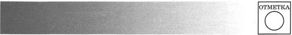
ТВОРЧЕСКИЕ ЗАДАНИЯ
СОСТАВЛЕНИЕ ПЛАНОВ
Вам поручено подготовить развёрнутый ответ по данной теме. Составьте план, в соответствии с которым вы будете освещать эту тему.
План должен содержать не менее трёх пунктов. Напишите краткое пояснение содержания любых двух пунктов.
Если вы затрудняетесь в составлении плана, который бы полностью раскрывал данную тему, то можете выбрать один из существенных вопросов (разделов, направлений, проблем) учебника.
Напишите заголовок плана по выбранному вами вопросу (разделу, направлению, проблеме) и составьте план, раскрывающий его содержание, соблюдая все требования к количеству пунктов плана и пояснений.
Движение декабристов
Внутренняя политика Николая I
Отмена крепостного права в России
«Восточный вопрос» в истории России
Внешняя политика Александра III
Социально-экономические реформы П.А. Столыпина
ИСТОРИЧЕСКИЕ СОЧИНЕНИЯ
Прочитайте приведённые ниже списки и напишите небольшое историческое сочинение, в котором будут использованы все перечисленные элементы. При написании сочинения продемонстрируйте на фактическом материале ваше знание истории по соответствующей эпохе (периоду, событию, явлению, процессу).
1) плот на реке Неман; 2) Пруссия; 3) непрочность мира; 4) Турция и Иран; 5) Варшавское герцогство; 6) «континентальная блокада».
1) самобытность пути развития России; 2) славянофилы; 3) парламент; 4) по западному пути; 5) крепостное право; 6) Пётр I.
1) Д.А. Милютин; 2) студенты; 3) система комплектования и пополнения армии; 4) сроки службы; 5) Пётр I; 6) Крымская война.
1) Франко-прусская война; 2) оформление русско-французского союза; 3) Эльзас и Лотарингия; 4) Тройственный союз; 5) оккупация австрийской армией Боснии и Герцеговины; 6) посещение Кронштадта.
1) отсутствие народного представительства во власти; 2) 17 октября 1905 г.; 3) Кровавое воскресенье; 4) Г.А. Гапон; 5) Русско-японская война; 6) массовые забастовки.